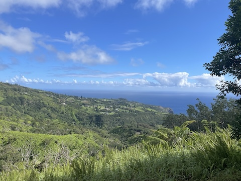

Places to go!
- Palos Verdes
- Maui
- BYUH
- City
- Temple
My tour is about places that I have seen while being back from my mission, and cool photos I took while out in Los Angeles. It was an incredible experience that I cherish and still look back at all of the incredible memories made out there. Afterwards, making many new memories out here at home too. This is my first semester at BYUH but I have been loving the temple and the campus. Of all of these photos, I can truly say that nothing compares to my island Maui. I hope that you enjoy my photos and can appreciate them as I have!

Repeating Rock Image
The repeating rock flows right beneath all of this.